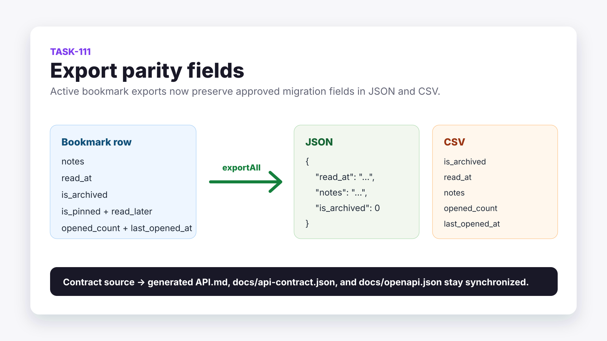

Little Imp Task Report
Export Parity Fields

Before
GET /export already supported JSON and CSV plus filters, pinned/read-later fields, and open metrics, but it still omitted personal notes, read state, and the archive-state column from the export schema.
Problem
Export files were not complete enough for Grimoire parity migration workflows. A user could export active bookmarks but lose notes and read-state context even though those fields exist in Little Imp's normal bookmark API.
Changes Added
- Added
is_archived,read_at, andnotesto daemon export rows. - Appended stable CSV columns for archive state, read timestamp, and notes after the existing export columns.
- Updated the API contract source and regenerated
API.md,docs/api-contract.json, anddocs/openapi.json.
Result
Active-library JSON and CSV exports now preserve the approved bookmark parity fields with documented null/default behavior. The route remains active-only, so exported rows currently carry is_archived: 0 while archived and trashed rows stay excluded.
Verification
bun test src/test/integration/bookmarks.test.tsbun test src/test/integration/bookmarks.test.ts -t "GET /export includes approved bookmark parity fields"npm run test:daemonnpm run type-check:daemonnpm run docs:api,npm run docs:api:check, andnpm run docs:openapi:checkgit diff --check
Implementation Notes
The export path continues to use BookmarkRepository.exportAll as the single source for active export rows. Existing CSV column order is preserved, and the new fields are appended so column-name readers and simple positional readers have the smallest possible compatibility impact. CSV escaping is unchanged; the new notes field uses the existing escaping helper for commas and quotes.
Files Changed
daemon/src/db/bookmark-repository.tsdaemon/src/routes/export.tsdaemon/src/api/contract.tsdaemon/src/test/integration/bookmarks.test.tsAPI.mddocs/api-contract.jsondocs/openapi.json